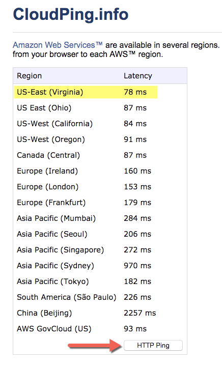

Link your AWS Account¶
This is the easiest and recommended way to link your AWS Account to Bipost API.
IMPORTANT NOTICE: If you are planning to use Bipost Sync for production you may want to follow your IT department policies and use AWS security according to your needs.
Step 1: Have an AWS Account?¶
If you don't have an AWS Account please proceed:
-
Create an AWS Account here aws.amazon.com

-
AWS usually makes an automated verification phone call, we suggest to provide a land line.
- Provide payment information.
- Select Basic Support (free plan).
- Congrats you have an AWS account!
Need Help? --> Write us.
Step 2: Canonical User ID¶
Logged in to AWS Account:
- Upper right corner of your AWS console, click your account name (or follow next link).
- My Security Credentials.
- Click Continue to Security Credentials if dialog appears.
- Expand Account Identifiers.
-
Copy AWS Account ID (12-digit) and Canonical User ID (64-digit).

-
Email these numbers to info@factorbi.com so we can setup your dedicated Bucket.
Please stop here until you get a reply email from Factor BI. We will provide your bucket name which will be used on further steps.
Step 3: Closest AWS Region¶
- Click the above link and hit HTTP Ping and look for the lowest latency.
- Maybe you want to try this at different times of the day.
- Take note of the closest region.

Step 4: CloudFormation¶
Based on the result from previous step, click the icon that is the closest Region to your location.
| AWS Region | Short name | |
|---|---|---|
| US East (N. Virginia) | us-east-1 |  |
| US East (Ohio) | us-east-2 | |
| US West (California) | us-west-1 | |
| US West (Oregon) | us-west-2 | |
| Canada (Central) | ca-central-1 | |
| Europe (Ireland) | eu-west-1 | |
| Europe (London) | eu-west-2 | |
| Europe (Frankfurt) | eu-central-1 | |
| Europe (Paris) | eu-west-3 | |
| Asia Pacific (Mumbai) | ap-south-1 | |
| Asia Pacific (Seoul) | ap-northeast-2 | |
| Asia Pacific (Singapore) | ap-southeast-1 | |
| Asia Pacific (Sydney) | ap-southeast-2 | |
| Asia Pacific (Tokyo) | ap-northeast-1 | |
| South America (São Paulo) | sa-east-1 | |
4.1. Select Template¶
- The template must be already selected, click Next lower-right blue button.
4.2. Specify Details¶
- Stack Name: this will be the prefix of all provisioned services. Example:
mycompany-prod - BucketName: Paste the S3 bucket name that your received from Factor BI over email. It must look like this:
bipostdata-123456789012 -
DBAdminPassword: Type a complex password. Must be at least 8 characters containing uppercase and lowercase letters, numbers and symbols.
Password must be at least eight characters long. Can be any printable ASCII character except "/", """, or "@".
-
DBAdminUsername: Database Admin Username, example:
root - DBInstanceClass: for testing purposes select the smallest available, currently
db.t2.small - Environment: Text to be included in the database cluster name.
- PublicSubnetACIDR: Leave default. Only modify the subnet address if multiple environments are needed, example:
10.20.10.0/24 - PublicSubnetBCIDR: Leave default. Only modify the subnet address if multiple environments are needed, example:
10.20.20.0/24 - SubnetsAZ: Select two availability zones to create the resources.
- VPCCIDR: Leave default. Only modify the address if multiple environment are needed, example:
10.20.0.0/16 - Click Next, blue button blue button.

4.3. Options¶
- Leave all defaults, many in blank.
- Click Next, blue button blue button lower right.
4.4. Review¶
- Check I acknowledge that AWS CloudFormation might create IAM resources with custom names.

- Click Create blue button. This will redirect to CloudFormation console home.
- Click refresh icon, upper right corner.
4.5. Resources created¶
- Check Stack Name.
- Review Events tab while Status is CREATE_IN_PROGRESS.
- Once Status is CREATE_COMPLETE review Outputs tab.
- You may want to copy and save on a secure place all Outputs, as you will use them for further configuration.
Come back any time and open again the Outputs tab. --> From AWS Console Home, search for CloudFormation.

Step 5: Add Role to Cluster¶
- Open RDS console.
- Click Clusters on left pane.
- Click radio button on your cluster.
-
Click Actions then Manage IAM roles.

-
Under Add IAM roles to this cluster select the DBRole created on Outputs tab, Step 4.5, and click Add role button.

-
Wait until you see Status active.
- Click Done.
Step 6: Test MySQL Connection¶
-
Download MySQL Workbench and install on your machine.
-
Open MySQL Workbench and setup a new connection.
-
Copy and paste from the Outputs tab (Step 4.5):
Connection Name: type any name of your preference.
Connection Method:
Standard (TCP/IP)Hostname: Paste the
AuroraEndpointstring.Port:
3306Username: Paste the
DBUserstringClick Test Connection and when prompt type the
DBAdminPasswordyou used on Step 4.2.If you have a successful connection then you are good to go!
Step 7: Register at Factor BI¶
Click and follow steps to create your account with Factor BI.